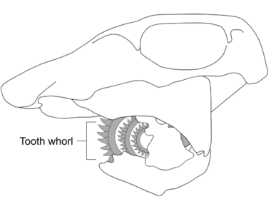

1. The purple pitcher plant, Sarracenia purpurea is a species of carnivorous plant. In the image below, the plant has caught an unfortunate frog and the frog is trying to escape the trap. What characteristic of living things is illustrated by both the plant and the frog in the image below?
2. Chlorobium limicola are an example of photosythetic prokaryotes. Which organelles do Chlorobium limicola contain?
⠀⠀I. Cholorplasts
⠀⠀II. Nucleus
⠀⠀III. Ribosomes
3. The image below shows two different types of cell from an indivdual.
Which of these following statements, best explain why these cells are so different?
4. A normal autosomal human cell contains 46 chromosomes. During which phases of mitosis does the cell contain 92 chromosomes?.
⠀⠀I. Prophase
⠀⠀II. Metaphase
⠀⠀III. Anaphase
⠀⠀IV. Telophase
_________________________________________
Questions 5 and 6 refer to the following diagram.
5. What are the names of structures I, II, III?
6. What are funtions of structures I, II, III?
_________________________________________
7. Red blood cells have a feature which suggests they are an exception to the cell theory. What is this feature?
8. Which of the following organelles contain DNA?
⠀⠀I. Nucleus
⠀⠀II. Mitochondria
⠀⠀III. Chloroplasts
⠀⠀IV. Ribosomes
9. Mycobacterium tuberculosis (shown below) are highly pathogenic bacteria that cause tuberculosis in humans, which is fatal if left untreated. Antibiotics are prescribed to target bacterial structures that are absent in animal cells in order to kill the bacterium.Which of the following structures is most likely targeted by antibiotic treatment?
10. If a tardigrade has the length of 1 millimetre and a scientist shows it with a length of 10 centimetres in a drawing, what is the magnification of the drawing?
11. The immortal jellyfish, Turritopsis dohrnii, is a biologically immortal jellyfish. This is partially because the cells of T. dohrnii are not subject to the "Hayflick limit," where the number of times a cell can divde is limited due to the shortening of teleomeres to a critcal length. Which feature of the cells in T. dohrnni could explain why it's not subject to the Hayflick limit?
12. The diagram below represents a reconstructed skull of a Helicoprion.
Helicoprion has a sprial cluster of teeth known as a "tooth whorl." This unusual tooth arrangement most likely provided Helicoprion with a deshelling mechanism to prey on hard bodied cephlapods. This tooth whorl is an example of
13. The graph below represents the number of individuals infected overall with Tuberculosis (TB) and the number of individuals who had been infected with Multidrug-ressitant TB (MDR-TB) over a 10-year period, from 1991 to 2001, in the Russian Federation. MDR-TB is TB bacterium that are at least resistant to isoniazid and rifampin, the two most potent TB antibiotics.
Which of the following steps can help reduce the growing antibiotics resistance among TB in the Russian Federation?